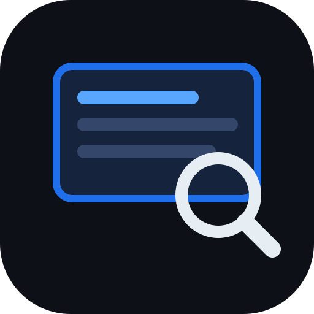

見た画面は、あとから検索できる。
macOSWindowsローカル処理
一定間隔で画面を自動キャプチャし、端末内のOCRで文字を読み取って、 全文検索できるタイムラインにします。「さっき見たあのページ」「あのエラー文」 「どこかで見た番号」を、記憶ではなく検索でたどれる。スクリーンショットの山ではなく、 探せる記憶に。
設定した間隔（数秒〜分単位）で、表示中の画面を静かに記録。手動のスクリーンショットは要りません。常駐したまま、見たものを取りこぼさない。
キャプチャした画面の文字を、その場で読み取り（macOS は Vision、Windows は Windows OCR）。日本語・英語に対応し、画面に映っていた言葉で検索できます。
時系列に並んだサムネイルを遡って、「あのとき何を見ていたか」を一望。検索で絞り込み、その瞬間の画面そのものに戻れます。
キャプチャ画像も読み取ったテキストも、あなたの端末の中だけに保存。既定ではどこのサーバーにも送りません。
メニューバー（macOS）／システムトレイ（Windows）に常駐。普段は目立たず、必要なときにタイムラインを開く。
キャプチャ間隔、保存しておく期間、記録しないアプリ（除外）を自分で設定。容量と記憶のバランスを自分で決められます。
macOS / Windows のアルファ版（v0.1.0）を公開しました。
macOS / Windows とも署名前のアルファ版です。初回起動時に OS の警告が出ることがあります（macOS は右クリック →「開く」で起動できます）。
タイムライン画面のイメージ（サンプル）。キャプチャは端末内にのみ保存されます。
v0.1.0 を公開中。未署名のため初回は右クリック →「開く」で起動します。キャプチャ開始時に macOS が画面収録の許可を求めるので、案内に従って許可してください。
ご意見・不具合報告は ymatsuza.tech@gmail.com までお気軽に。
キャプチャした画像と読み取ったテキストは、あなたの端末内に保存されます。既定では外部のサーバーへ送信しません。 キャプチャ間隔・保存期間・記録しないアプリ（除外）はいつでも変更でき、保存したデータはあなた自身で削除できます。 任意のAI要約を有効にした場合のみ、あなたが設定したAPIキーで対象テキストが選んだAIサービスへ送られます（既定では無効）。
Everything you've seen, searchable later.
macOSWindowsOn-device
DisplayMemory quietly captures your screen at a set interval, reads the text with on-device OCR, and turns it into a full-text searchable timeline. That page you saw earlier, that error message, that number from somewhere — find it by searching, not by remembering. Not a pile of screenshots: a memory you can search.
Records what's on screen at your chosen interval (seconds to minutes). No manual screenshots — it stays resident and never misses what you saw.
Reads the text in each capture right on your machine (Vision on macOS, Windows OCR on Windows). Search by the words that were on your screen, in English, Japanese and more.
Walk back through time-ordered thumbnails to see what you were looking at. Filter by search and jump straight back to that exact screen.
Both the captured images and the extracted text stay only on your device. By default nothing is sent to any server.
Lives in the menu bar (macOS) or system tray (Windows). Out of the way until you want it — then open the timeline.
Set the capture interval, how long to keep history, and which apps to never record. You decide the balance between storage and memory.
The macOS and Windows alphas (v0.1.0) are out.
macOS and Windows are unsigned alpha builds — on first launch you may see an OS warning (on macOS, right-click → Open to run it).
A sample of the timeline view. Captures are stored only on your device.
v0.1.0 is available now. Unsigned, so first launch is right-click → Open. macOS will ask for Screen Recording permission when capture starts — grant it when prompted.
Bug reports or feedback? Email ymatsuza.tech@gmail.com.
DisplayMemory is an indie-built app. Sponsorships are greatly appreciated and help keep it going.
Captured images and the extracted text are stored on your device. By default nothing is sent to any server. You can change the capture interval, retention period, and excluded apps at any time, and delete the stored data yourself. Only if you enable the optional AI summary is the relevant text sent — using your own API key — to the AI service you choose (off by default).